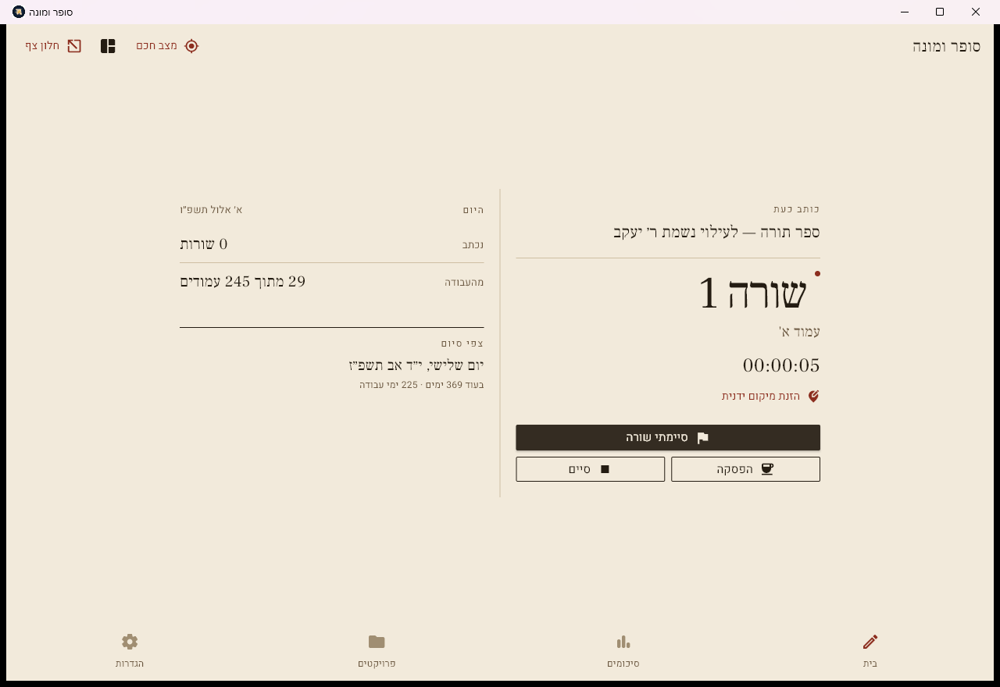
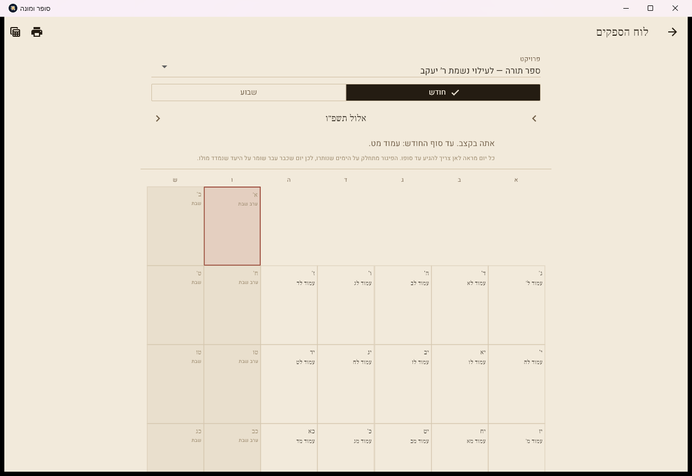
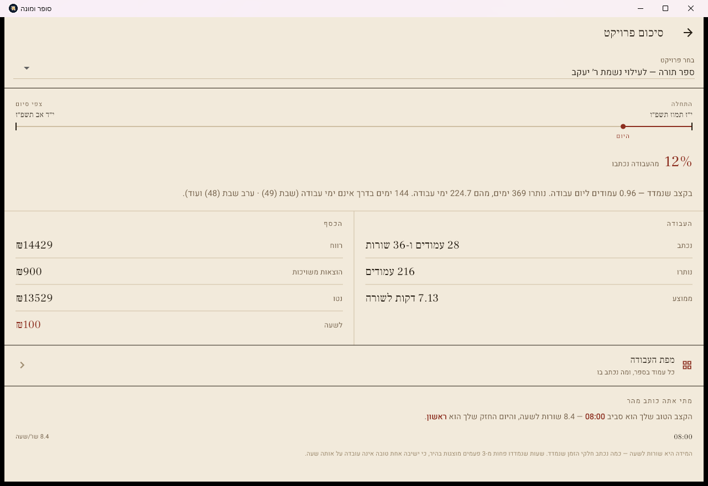
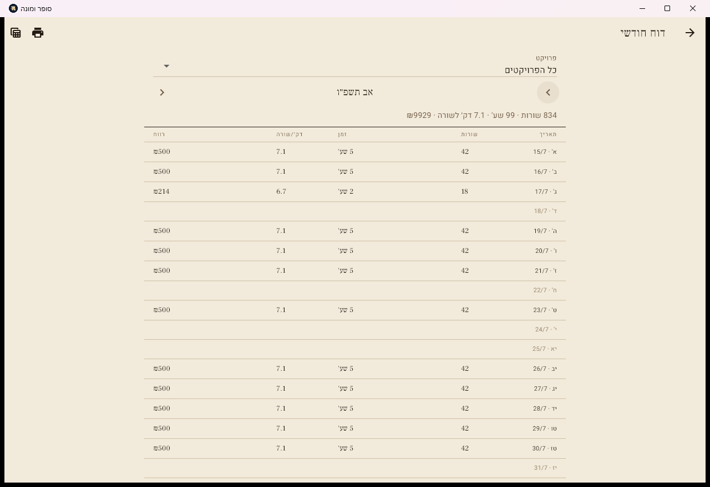
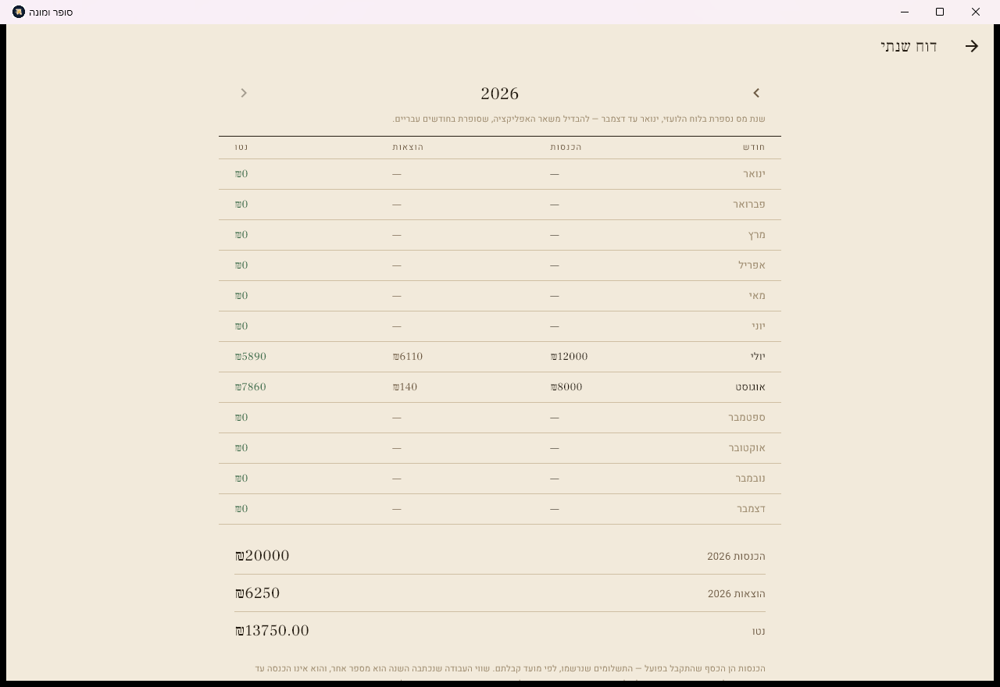
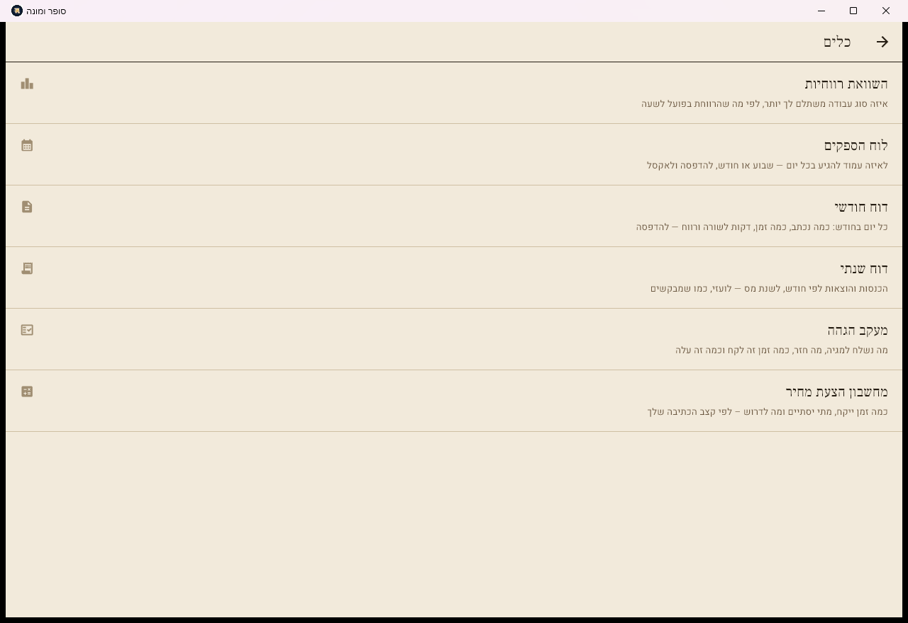

כמה נכתב, כמה זמן לקח, כמה הרווחת —
ומתי הספר ייגמר.
בלי פתק, בלי אקסל, בלי לחשב בראש.
חינם · ללא הרשמה · ללא אינטרנט · הנתונים במכשיר שלך בלבד
התוכנה נועדה מלכתחילה להחליף את הדף שממלאים כשחוזרים הביתה. הטיימר נבנה סביבה — כתוספת, לא במקומה.
כתבת בחדר סופרים, בלי מחשב ובלי טלפון. חזרת הביתה, פתחת את התוכנה, ורשמת מאיזה עמוד עד איזה. הזמן אינו חובה — לא יודע כמה שעות זה לקח? השאר ריק.
פתחת את התוכנה לפני שהתחלת. היא מודדת את הזמן לבד, סופרת שורה־שורה, ויודעת להגיד לך כמה דקות לוקחת לך שורה וכמה אתה מרוויח לשעה.
עדכון ממוקד לכתיבה בפועל: תפילין, מזוזות, מיקום וזמן. כל הנתונים הקיימים נשמרים וההתקנה היא עדכון רגיל מעל הישנה.
כל פרשייה שייכת לזוג ולבית הנכון. אי אפשר לדלג על פרשייה, ופרשייה שנפסלה ניתנת להסרה ולהתחלה מחדש.
לצד זמן הכתיבה מוצג שעון השורה הנוכחית. בסיום כל שורה ההתקדמות וההספק נשמרים ומתעדכנים מיד.
חגיגת יעד יומי, יעד זמן לשורה עם חריגה אדומה, מטרונום, יעד משך לישיבה והתראת סיום. כל תוספת מופעלת בנפרד בהגדרות.
אפשר לעבור למזוזה הבאה ולחזור אחר כך למזוזה שהופסקה באמצע, בדיוק מהמקום שבו הכתיבה נעצרה.
במצב חכם משנים מיקום בלחיצה על שם הפרשה או המיקום הגדול שמופיע במסך — בספר תורה, תפילין ומזוזה.
טווח על פני כמה עמודים מכבד את שורת ההתחלה והסיום, ובחירת שעות ההתחלה והסיום ברורה ונפרדת.
סיכום התפילין מציג את ההתקדמות לכל פרשייה לפי מספר השורות האמיתי שלה, במקביל לשורות ספר תורה.
עד סוף היום תהיה בעמוד י״ד. מדלג על ימים שאינך כותב בהם, ואם פיגרת ההפרש מתחלק על הימים שנותרו.
מה נשלח למגיה, מה חזר, מה נמצא וכמה זה עלה. העלות נכנסת לרווח הנקי ולדוח לרואה החשבון.
הכסף שהגיע בפועל — להבדיל משווי העבודה שכתבת. שני מספרים שונים, ולרואה החשבון צריך את הראשון.
הכנסות והוצאות חודש בחודשו, לפי שנת מס לועזית. מוכן להדפסה ולאקסל.
כל יום בחודש: כמה נכתב, כמה זמן, דקות לשורה ורווח.
כל עמוד ומה נכתב בו — כדי לאתר חורים לפני שההגהה מגלה אותם.
באיזו שעה וביזה יום הקצב שלך הטוב ביותר, מתוך הרשומות שלך בלבד.
שעון חריגה באדום כשעברת את הזמן שהקצבת, וצליל בסיום — אם ביקשת.
מודרני, קלף ולילה — ומעבר אוטומטי ללילה מצאת הכוכבים ועד עלות השחר.
התחלה, הפסקה וסיום שורה, בלי לעזוב את הקולמוס. ווינדוס.
כמה זמן ייקח ומה לדרוש — לפי הקצב שנמדד אצלך, לא לפי הערכה.
אוטומטי לתיקייה שאתה בוחר, וייבוא מגרסה ישנה. הייבוא ממזג ואינו מוחק.
צילומי מסך אמיתיים מגרסה 0.4.0, בערכת העיצוב "קלף".






גרסה 0.5.0. שני הקבצים נמצאים בדף השחרורים בגיטהאב.
ווינדוס 10 ומעלה
להורדת קובץ ה־ZIPאנדרואיד 7.0 ומעלה
להורדת קובץ ה־APKכל אחד יכול למשוך את הפרויקט, לקרוא אותו ולשנות אותו כרצונו — לתקן משהו שמפריע, להוסיף תכונה שחסרה, או להתאים אותו לדרך העבודה שלו. גם מי שאינו מתכנת: אפשר למסור את הקוד לסוכן בינה מלאכותית ולבקש ממנו את השינוי.